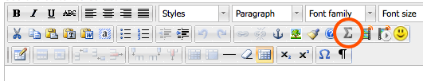
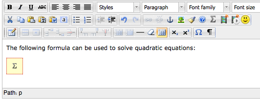

olatcore/src/main/resources/serviceconfig/org/olat/core/gui/components/form/flexible/impl/elements/richText/_spring/olatdefaultconfig.xmland add the bean
org.olat.core.gui.components.form.flexible.impl.elements.richText.plugins.olatmatheditor.OlatMathEditorPlugin
to the list of custom plugins:
No additional configuration is needed.: : (Beans for other plugins go here.) :
: :
After successful configuration, you should see the Math Editor button (showing a greek Sigma) in the editor toolbar:

If you click this button, a dialog will appear:
Enter your LaTeX into the top area. It will be converted into a preview as you type:

If you make a mistake, an error message will appear inside the preview area:

When you're done, klick the Insert button. The math formula will be shown in the text using a placeholder image:

If you want to open the formula again, just select the
placeholder image and then klick on the Math Editor button again.
Hint: If you want to know the formula without having to
open the dialog again, just move your mouse over the placeholder image.
The formula will appear as a tooltip.
The OLAT Math Editor Plugin uses jsMath to render the
LaTeX formulas. jsMath has an option dialog which allows you to choose
what types of fonts to use, the size of the fonts etc. Just click on the
small "jsMath" box in the top right corner of the editor window.
Hint: You can choose the method used by jsMath to display
the math formulas, and it is possible to tell it to use separately
downloadable fonts to do so. See the jsMath
homepage for more information.
jsmathdialog.html via a parameter set in OlatMathEditorPlugin.java
(see the getPluginParameters() method)OlatMathEditorPlugin.getPluginParameters()
method as well.prototype.js file.content.css file responsible for the
placeholder styling can be found in the package directory under the _static/js/css
path.js/jsmathdialog.js for details.